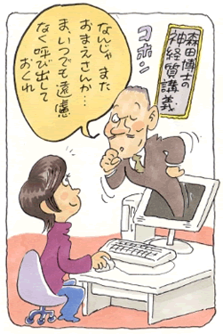

社会恐怖2
対人恐怖とネットのおかげで得た宝物
（対人恐怖、他）
中野 真由美（仮名）29歳・主婦
対人恐怖症に悩んで・・・
幼い頃から「人と会話がはずまない」「人と親しくなれない」それゆえ「人といると緊張する」といったことで漠然と悩んでいました。小五の時クラス中の女子から無視されて、それからは「ひとりぼっちになること」「人に嫌われること」を強く恐れるようにもなりました。
やがて、皆にうまく馴染めない自分の感覚はどこかおかしい・このままでは幸せになれないと思い、自分の感じ方や性格をすっかり変えてしまいたいと、交際術のハウトゥー本を読み漁ったり、性格改造の通信教育の講座を受けたりしました。またこれらの不安や努力を人に知られるのが嫌で、表面上は「明るく大らか」に振舞う努力をしました。
勉強や部活はそっちのけで、友だちの言うことには何でも同意し、善悪や自分の嗜好の見境もなく友だちと同じことをし、置いて行かれないように・はみ出さないようにと、そればかり気にしていました。でも内心で怯えながらニコニコしていてもちっとも楽しくありませんでした。話題や遊びの内容より、その時自分はそこで受け入れられているかどうかということだけが気になって、人の顔色ばかり伺っていました。
そんな心の内は人にも伝わってしまうのか、気を遣えば遣うほど周囲との関係はぎこちなくなっていきました。こんなにがまんして人と仲良くなるために努力をしているのにちっともうまくいかないことが腹立たしくなり、なんでもないふりをするのも辛くなって、高三の時学校へ行けなくなりました。
絶望。生活の発見会との出会い
これが最初の不登校で、この後大学時代にも二度、同じような経緯で不登校・引きこもりになりました。特に就職直前の半年間は、三度目の失敗で「もうダメだ、一生私はこのままだ」と将来に絶望し、人と会話をするのもおろか顔を合わせることも辛くなり、昼夜逆転の生活をして自室の布団から出られなくなりました。またどんなに努力しても受け入れてくれない世の中の全てを恨む気持ちでいっぱいになりました。
取り繕う余裕もなくなり、これまで黙っていた親にとうとうすべてを話し、精神科の病院にも行きました。森田先生の著書に出会ったのはちょうどそんな頃でした。病院に行っても芳しい結果は得られず、就職の時期は迫り、「生活の発見会」（神経症の自助グループ）を知った私は藁にもすがる思いで発見会の定期的な集まりである集談会に参加するようになりました。
そこで私は自分と同じようなことで悩み苦しんでいる人が他にも大勢いる、ということを知ってずいぶん慰められました。そこでは日々の生活の中で「目的本位になすべきことをなす」ということが強く言われていました。本当は、心の中の葛藤や不安や恐怖は誰にでもある当たり前のことだから、それはそんなものとして、日々の実際の生活を大切にし、今自分の目の前にあることに具体的に工夫をこらして生活する。そうするうちに心の中の不快な感情はやがて流れていく。そんな過程を会の仲間同士で支え合いながら体得できるようになろうという趣旨だったと思います。
ところが苦しさのあまり、また自己否定の気持ちが強くて、このままの私ではダメだ・変わらなくてはと思い込んでいた私は、「目的本位になすべきことをなせば」この不快な感情は消え、自分は明るく誰からも好かれる性格に生まれ変われると思い込み、今までの苦しみをきれいさっぱり解消してくれる「治療法」として森田療法の学習や実践に夢中で取り組みました。
勘違いしたままでもがむしゃらに行動するうちに気持ちも流れ、入会して三年経った頃、もう大丈夫だと思った私は森田の真髄を理解しないまま結婚を機に退会しました。そして出産・子育てと忙しく充実した日々を過ごすようになりました。「人と親しくなれない」「人といると緊張する」という悩みは相変わらずありましたが、そのことが思春期の頃ほど私の中で大きな位置を占めなくなっていたため、それで済んでいたのかも知れません。
再発。そしてインターネット掲示板（体験フォーラム）への参加
それから十年あまり経ち、子育ても一段落して自分自身のことを考える時間の余裕が出てきた頃から、再び私の対人恐怖症的な悩みが自覚されるようになりました。そして間もなく坂道を転がり落ちるように私は人と会うのが辛くなり家に引きこもるようになりました。

こんなことでは家族や子どもたちに申し訳ないと思い、また自分自身も辛くてたまらず、十年以上音信不通だった不義理な自分を恥じる余裕もなく、当時お世話になった集談会のMさんを頼ってメンタルヘルス図書室に駆け込みました。義理も体裁も投げ捨ててこちらへ飛び込んで本当によかったと思います。この時Mさんとの再会がなければ、森田療法との再会がなければ、今の私は一体どうなっていたかと思うと恐ろしいです。
当時は月に一度の集談会と、年に二度ほど集中的に行われていた学習会でしか森田に接する機会はありませんでした。でも、今回Mさんは、インターネットで財団のHPや掲示板にアクセスすれば、毎日いつでもどこでも森田先生の教えに触れることができる。また分からないことを質問したり、日々の中で困ったことや苦しかったことを相談し、アドバイスをもらうこともできる。さらにはそこに集う人たちとも知り合えて仲間ができるという画期的な方法を紹介して下さいました。
それでもやはり最初はインターネットに不慣れなこともあり、また見ず知らずの人の中にパソコン上とはいえ入って行くことに抵抗もありました。二週間ほどHPや掲示板を閲覧するのみでグズグズしていましたが、チャンスはある時に掴まなければ二度と掴めませんよと背中を押され、思い切って飛び込み、これまで必死で隠してきた心の内を書きました。
不安で押しつぶされそうでしたが、返ってきたのは暖かい共感の言葉や的確なアドバイスでした。ネットのイメージから中傷等の心配もしましたが、私の知る限りそういったことはまだ一度もありません。また、顔と顔をつき合わせてもなかなかうまく伝わらないこうした微妙な問題が、果たして文章のやり取りで何とかなるのかという心配も正直ありましたが、実際にやってみると月に一度の集談会とはまた違った充実感があり、心に響き・迫るものがありました。特に私のように子どものいる主婦の方や、他にも時間や距離の問題で、集談会や学習会に思うように参加できない方にはとても便利な学び方で、共に励まし合い・良い刺激を与え合える仲間との出会いもあります。
話が逸れてしまいましたが、私はアドバイスに従って掲示板に毎日日記を書くことにしました。さいしょは不快な気持ち（症状の悩み）や失敗したことばかり書いていましたが、「感情ではなく、日々どういうことをしたかを具体的に書いて下さい」と言われてからはそのようにしました。やがて日記を書くことがはずみとなって、日々の生活は徐々に前向きになっていきました。また注意されたものの、辛くて症状のことも書きましたが、「それが人の事実です」と繰り返し先生の原著を引用して教えて下さり、掲示板の仲間にも共感してもらい・励まされ・教えてもらううちに、森田先生が掲げられた「森田療法」というのは、実は私が以前思っていたような病気や異常の治療法ではなく、人のあるがままの事実を知り・それを自分自身で体感し、こうした悩みを抱きやすい神経質と呼ばれる性格傾向の人たちのよりよい生き方を教えて下さるものなのだと思うようになりました。（実際森田先生の言葉や著書は、神経質という一部の人だけに限らず、すべてのより良い人生を目指す人たちの指針になると思います。）
そうして掲示板で毎日たくさんの仲間たちと森田先生の教えを学び合ううちに、日常生活の中で、「これのことか」と実感することが増えて行きました。その頃には自分の対人恐怖症的な悩みをなくしたい、という気持ちはずいぶん薄れていました。それを何とかしようとすることは不可能だと分かったのです。
劇的な変化があった訳ではありません。ただ機会があればまずイエスと答えて何でもやってみるようになりました。やる前に考えるのではなく、やってみてダメならまたその時考えようという姿勢でいろんなことに積極的に手を出せるようになりました。対人恐怖症的な苦痛を感じても、それで行動を止めることはなくなりました。こうして書いてみるとどれもたいしたことはなく、当たり前のことです。でもその当たり前のありがたさを噛みしめながら今のわたしは日々幸せや苦痛を存分に感じて生きています。
インターネットによって、環境さえ整えばいつでもどこからでも森田先生の教えに触れることができる今日は、昭和の初めに先生がご自宅を開放して神経質者と共に生活された入院療法を再現できる素晴しい方法ではないかと思います。このHPに巡り会われた方のうち一人でも多くの人が、森田先生の教えに興味を持ち、触れていただけたらと思います。